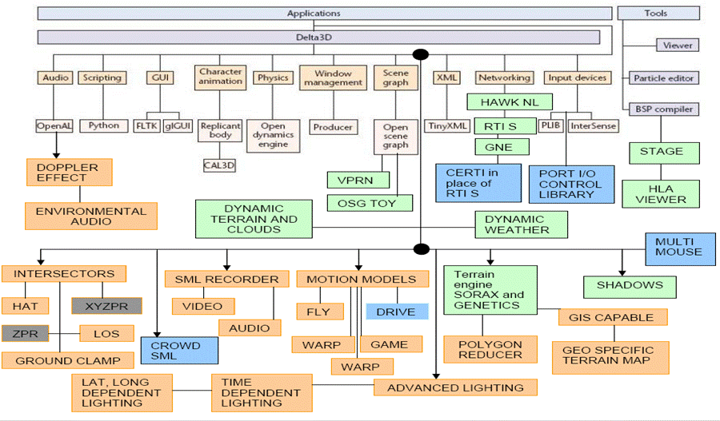

A World class rendering engine for advanced
gaming, modeling and simulation
- From movies to games to simulation systems, the power of 3D computer graphics has increased tremendously over the last decade . Computer graphics can be used for visual simulations to improve perception of soldier thus imparting effective training. Creating these customised video games requires tremendous programming skills as also an advanced simulation system.
-
The objective of the project being undertaken is to decide the essential and desirable (wish list) features that we would want as part of a 3D rendering engine suitable for military simulation and then carry out a survey of the many freeware game engines available on the Internet. Based on our survey we would then try to customize this engine to our requirements’ and finally test our project with a sample simulation.
-
Commercial off the shelf simulation systems are priced heavily and applications built on them require runtime licenses costing up to six figures for each application built. However, in reality, a review of some of these simulations reveals that almost all of them have essentially the same features; probably 90% of the functionality each provides is basically the same as that of a game, with minor differences. The difference between all of them essentially boils down to the most advanced features each provides. However, these advanced features are not needed for the vast majority of simulations. Worse, once these systems are used, projects become locked into the proprietary technologies used as the code is written expressly for the proprietary engine. In case you want a modified application due to changing requirements, you have to go back to the vendor for an upgrade as no source code is available.
-
I decided to start our quest for open source projects from Source Forge and other such Internet sites as a starting place to look for basic rendering engines and add-on modules to add to our open source engine. Our selection would be based on our credo and the following two criteria:
- Project’s technical background and merits.
- User support base of the project.
-
The rationale for choosing projects upon their technical background and merits would help in effective integration with minimum problems to the main solution while a project’s user support base and popularity would ensure that these projects don’t stagnate (ie remain current) too soon as they have many “indirect” developers.
-
My endeavour is to customise a prebuilt base engine to have almost all the desirable features in a fixed time frame. The desirable modules will be added from open source projects using the popular hooks method available as part of any object oriented programming. I intend to use VC ++.NET.
Presented below is the enhanced API of this engine. For details look at my SourceForge link

The enhancements are shown in different bold text colour boxes, my contributions in blue boxes.
The API is still evolving and the schematic presented above may not be current. For current information on sample simulations and the engine feel free to contact the author at the mail address presented on the home page